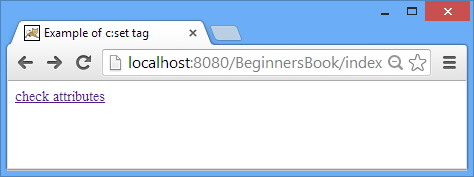
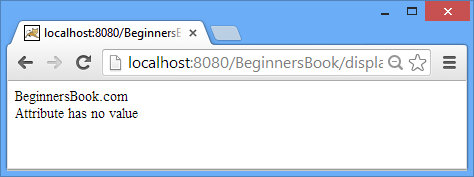

<c:remove> tag is used for removing an attribute from a specified scope or from all scopes (page, request, session and application).
Example
In the below example, first I have set two variables using <c:set> tag and then I have removed one of them using <c:remove> tag. As you can see in the output screenshot – when I tried to display both the variables, for the second attribute the page didn’t get any value and printed the default value using default attribute of <c:out> tag.
<%@ taglib uri="http://java.sun.com/jsp/jstl/core" prefix="c" %> <html> <head> <title>Example of c:remove tag</title> </head> <body> <c:set var="Site" scope="session" value="BeginnersBook.com"/> <c:set var="author" scope="session" value="Chaitanya"/> <c:remove var="author"/> <a href="display.jsp">check attributes</a> </body> </html>
display.jsp
<%@ taglib uri="http://java.sun.com/jsp/jstl/core" prefix="c" %>
<c:out value="${Site}"/><br>
<c:out value="${author}" default="Attribute has no value"/>


Scope attribute of <c:remove> tag
Above we have coded like this
<c:remove var="author"/>
This above code removes an attribute from all the scopes (page, session, application, request). In order to be specific we must need to specify the scope attribute inside <c:remove> tag, like I did below – The below JSTL statement will remove the variable var from session scope.
<c:remove var="author" scope="session"/>
Leave a Reply